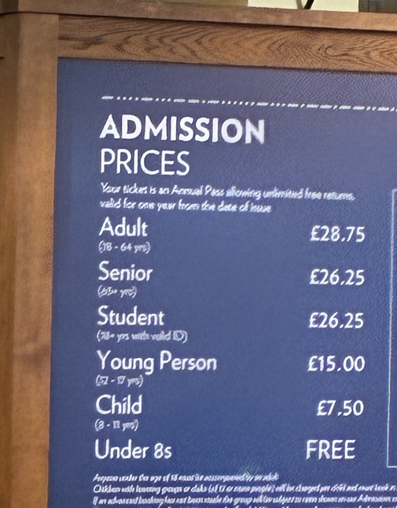
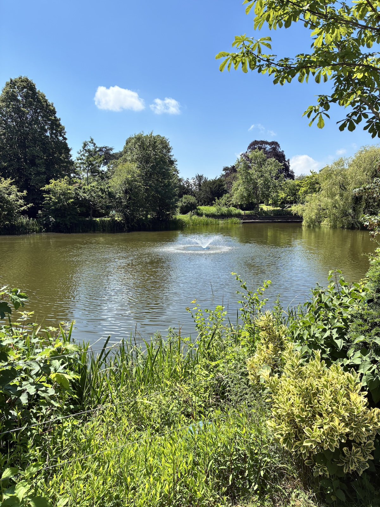
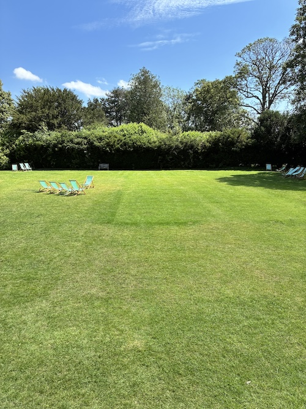
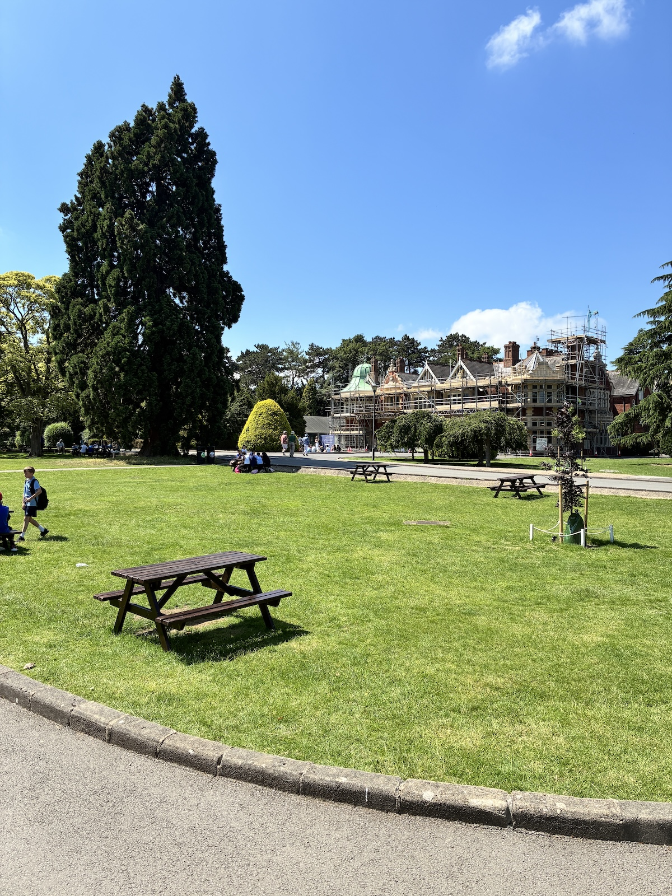
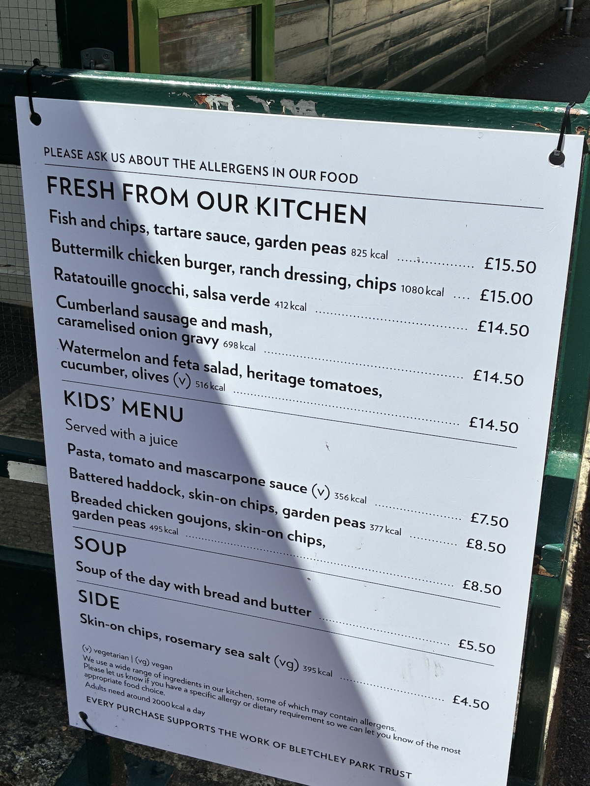
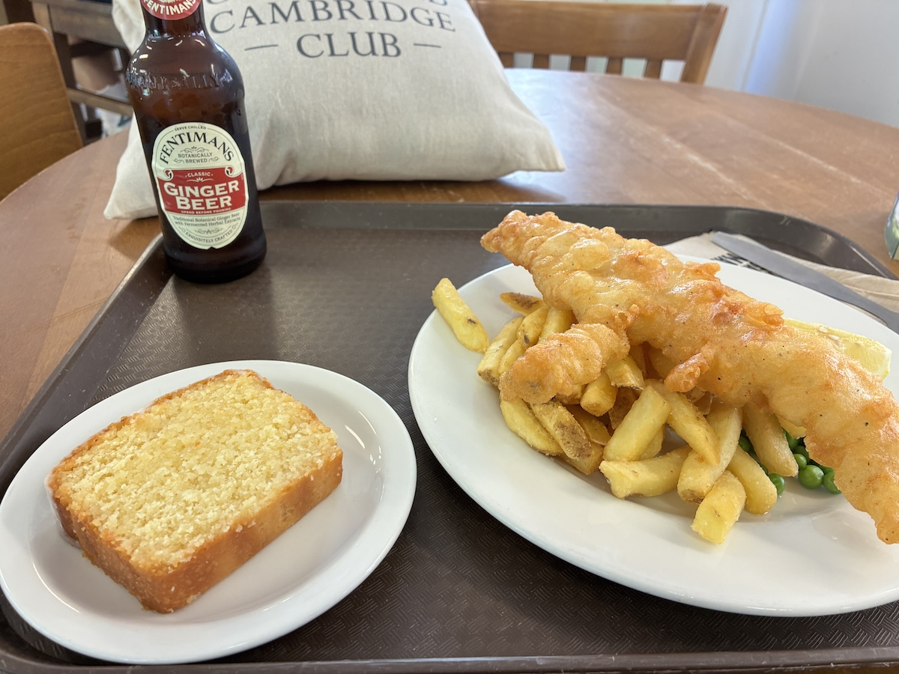

ブレッチリーパークに行ってきました
エニグマ、ローレンツ暗号、ノルマンディー上陸作戦――これらの言葉を耳にしたことがある方は多いのではないでしょうか。今回訪れたブレッチリー・パーク（Bletchley Park）は、第二次世界大戦中に行われた暗号解読計画「ウルトラ作戦」の中心地であり、まさにこれらの歴史的出来事の舞台の一つです。映画『イミテーション・ゲーム』の舞台としても知られています。
アラン・チューリングをはじめ、多くの数学者や言語学者、技術者たちが極秘裏に活動した場所でもあり、数学を学ぶ者として一度は訪れてみたいと思っていました。
今回はオックスフォードからの日帰り旅行です。まずバスで Milton Keynes Central まで向かい、そこから電車で一駅。移動時間は合計でおよそ2時間ほどでした。

駅から入場口までは徒歩2〜3分ほどです。受付には15人ほどが並んでいましたが、チケット購入から入場までは5分程度でした。

チケット代は決して安くありません。しかし購入したチケットはすべて年間パスポートとなっており、購入日から1年間は何度でも無料で再入場することができます。
館内の展示や音声ガイドはすべて英語です。受付を通るとすぐに展示エリアが始まり、ウルトラ作戦に関する映像が壁面に投影されていました。エニグマ暗号機の実物や、チャーチルによる手書きのメモなども展示されており、入場直後から見応えがあります。
同じエリアにはカフェとギフトショップも併設されていましたが、まずは園内を見て回ることにしました。

園内は想像以上に穏やかな雰囲気で、よく手入れされた庭園という印象です。噴水や池があり、のんびりと過ごせるチェアも各所に設置されています。戦時中には世界の命運を左右する機密作戦が進められていた場所とは思えないほど静かで、美しい空間でした。


公園の奥へ進むと、ウルトラ作戦の司令部機能を担っていた有名なマンションが姿を現します。残念ながら訪問時は外壁が工事用の足場で覆われていましたが、内部は公開されていました。個人的には、これまで訪れた西洋建築の中でも屈指の美しさを持つ内装だったように思います。

マンションのすぐ隣にある Hut 4 は現在カフェとして利用されています。

フィッシュ＆チップスとレモンケーキを注文しました。非常に美味しかったです。
園内には Hut や Block と呼ばれる建物が数多く残されています。これらは戦時中に建設されたもので、それぞれが異なる役割を担っていました。現在ではほとんどが展示施設として公開されており、暗号解読の歴史だけでなく、当時の生活や技術、組織運営についても知ることができます。
一つひとつの建物はそれほど大きくなく、全体を見て回るのに必要な時間はおよそ1時間ほどです。せっかく訪れるのであれば、ぜひすべての展示を見て回ることをおすすめします。
数学に興味のある方はもちろん、コンピュータ科学や歴史に関心のある方にとっても、ブレッチリー・パークは非常に魅力的な場所です。第二次世界大戦の裏側で何が起こっていたのか、そして現代の情報社会の源流がどこにあるのかを肌で感じられる貴重な場所でした。オックスフォードやロンドンからも十分日帰り圏内ですので、機会があればぜひ訪れてみてください。